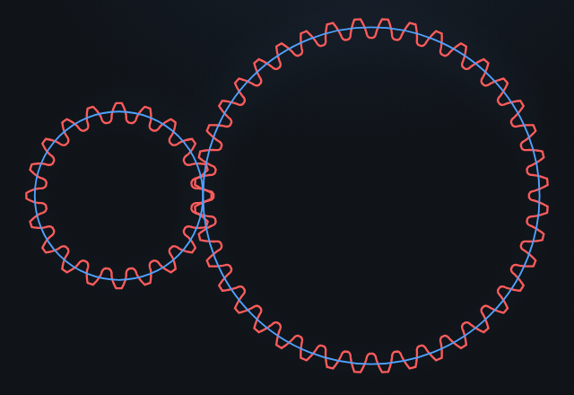

How to design laser-cut involute gears
Involute gears are the standard for smooth, constant-velocity power transmission — and with a laser cutter you can make working ones from acrylic, Delrin or plywood in minutes. The catch is that most "gear generators" skip the details that decide whether teeth actually mesh. This guide covers what matters, then exports laser-ready SVG/DXF for you.
⚙️ Open the free gear generator
The three numbers that define a gear
Every involute spur gear comes down to three parameters:
- Module (m) — tooth size in millimetres. Pitch diameter =
m × z. Bigger module = bigger, stronger teeth. Two gears only mesh if they share the same module. - Tooth count (z) — how many teeth. The ratio of tooth counts is the gear ratio.
- Pressure angle (α) — the flank angle, almost always 20°. Use 14.5° only to match old hardware; 25° for higher load. Both gears must share it.
m × (z₁ + z₂) / 2. For m2, z20:z40 that's 2 × (20+40)/2 = 60 mm.Undercut and root fillets — where cheap generators fail
Below ~17 teeth (at 20°), a rack cutter removes material near the tooth root — this is undercut, and it weakens the tooth. Many SVG generators either ignore it (producing teeth that won't actually cut cleanly) or draw a fake circular fillet. A correct generator traces the true trochoid the cutter sweeps, so the root fillet — and any undercut — matches reality. GearForge does this, and reproduces undercut correctly down to z=8 while still emitting a simple, closed, laser-cuttable outline.
If you have a low tooth count and want to avoid undercut entirely, add profile shift (x) — a positive shift (e.g. x = 0.3–0.5) fattens the tooth root. GearForge lets you set it per gear and recomputes the meshing geometry.
Kerf: the laser-specific step
A laser removes a finite stripe of material — the kerf. If you cut the nominal outline, every part comes out undersized: gears end up loose, bores oversized. The fix is to offset the cut path outward by half the kerf on outer contours and inward on holes, so the finished part is dimensionally true.
- Cut a 10 mm test square in your material.
- Measure it with calipers — say it comes out 9.85 mm.
- Kerf = 10 − 9.85 = 0.15 mm. Enter that; GearForge grows contours and shrinks holes by kerf/2 automatically.
Materials that make good laser-cut gears
| Material | Notes |
|---|---|
| Acetal (Delrin / POM) | Best all-round: low friction, tough, self-lubricating. Needs a CO₂ laser and good ventilation. |
| Acrylic (cast) | Cheap, crisp edges, fine for light loads and prototypes; brittle under shock. |
| Plywood / MDF | Great for mock-ups and low-speed mechanisms; add backlash and expect wear. |
Step by step in GearForge
- Open the generator and pick Spur (or load the “Gear m2 z20 : z40 pair” preset).
- Set module, tooth count(s), pressure angle and any profile shift. The preview updates live and animates the mesh.
- Choose your bore — round, D-flat, hex, square, or round + a DIN 6885 keyway.
- Enter your measured kerf and a small backlash allowance (0.05 mm is a sensible default).
- Export SVG (mm-true, with
CUTandENGRAVElayers) or DXF R12, and import straight into LightBurn, Inkscape, xTool or Glowforge. - Check the inspection report — it gives tooth thickness, span measurement Wₖ and measurement-over-pins M so you can verify the cut part with calipers.